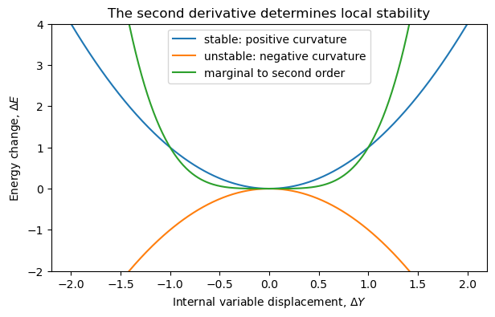
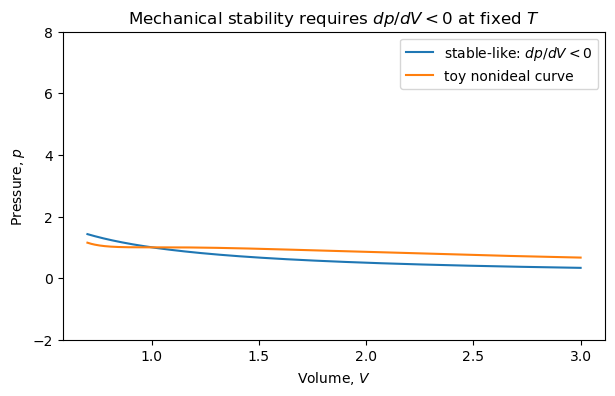
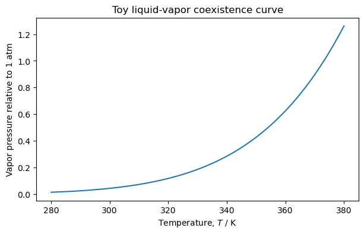
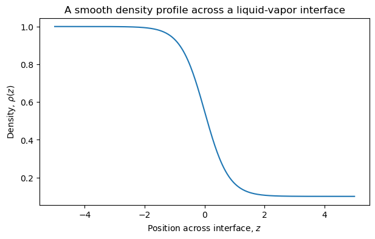

4.7.2. Conditions for Equilibrium and Stability#
This lesson covers the main ideas in Chapter 2 of Chandler, Introduction to Modern Statistical Mechanics.
The theme of the chapter is:
Equilibrium tells us where a thermodynamic state can sit. Stability tells us whether it will stay there.
4.7.2.1. Learning Goals#
After this lesson, students will be able to:
Explain equilibrium as a variational principle.
Distinguish conserved extensive variables from internal extensive variables.
Derive the multiphase equilibrium conditions
Explain why the second derivative term determines stability.
Connect stability to positive heat capacity and positive compressibility.
Interpret phase coexistence as equality of chemical potentials.
Derive the Clausius–Clapeyron equation.
Describe, at a qualitative level, why interfaces introduce a surface tension term.
4.7.2.2. Coding Concepts#
The following coding concepts are used in this notebook:
Arrays with NumPy
The code is intended to support thermodynamic intuition, not to introduce new programming techniques.
4.7.2.3. Review: Conserved and Internal Extensive Variables#
In Chapter 1, equilibrium was described as the result of maximizing entropy of minimizing internal energy over internal constraints (at constant \(V\) and \(N\)).
A useful way to organize the idea is:
where \(S\), \(V\), and the total mole numbers \(n_i\) are conserved or externally fixed, while the \(Y_i\) are internal extensive variables.
Examples of internal extensive variables include:
The entropy in phase 1, \(S^{(1)}\).
The volume of phase 1, \(V^{(1)}\).
The number of moles of species \(i\) in phase 1, \(n_i^{(1)}\).
The extent of a chemical reaction.
The fraction of a system in liquid versus vapor.
At equilibrium, the internal variables take the values that minimize \(E\) at fixed \(S\), \(V\), and \(n_i\).
4.7.2.4. Notation Note#
Chandler uses lower-case \(\delta\) to denote small variations away from equilibrium.
In these notes, we will often write small finite perturbations as \(\Delta Y\) to avoid confusing this with the thermodynamic notation \(\delta q\) and \(\delta w\) for path-dependent heat and work.
So, for example,
means that \(Y\) has been displaced slightly from its equilibrium value.
4.7.2.5. The Fundamental Differential#
The starting point is the thermodynamic identity
For each homogeneous phase \(\alpha\),
This equation tells us how the energy changes if entropy, volume, or composition are repartitioned among phases.
4.7.3. Part 1: Multiphase Equilibrium#
Consider a heterogeneous system with two phases, labeled \((1)\) and \((2)\).
The total extensive variables are fixed:
The total energy is
The internal variables can be chosen as
because the corresponding variables in phase \((2)\) are determined by conservation.
4.7.3.1. Allowed Variations#
Because the total \(S\), \(V\), and \(n_i\) are fixed,
Now write the first-order change in total energy:
Using the fundamental differential for each phase,
4.7.3.2. First-Order Equilibrium Condition#
Substitute the conservation constraints:
At equilibrium, the first-order change in energy must vanish for arbitrary allowed variations:
Therefore,
These are the conditions for thermal, mechanical, and material equilibrium between phases.
4.7.3.3. Discussion:#
For each quantity, identify the internal variable whose variation produces the equilibrium condition.
Why does varying \(S^{(1)}\) lead to equality of temperature?
Why does varying \(V^{(1)}\) lead to equality of pressure?
Why does varying \(n_i^{(1)}\) lead to equality of chemical potential?
What physical process would be blocked if the corresponding internal variable could not vary?
4.7.3.4. Chemical Potential as a Generalized Force#
The chemical potential difference drives transfer of material.
If species \(i\) can move between two phases and
then moving a small amount of species \(i\) from phase \((1)\) to phase \((2)\) lowers the energy at fixed \(S\), \(V\), and total \(n_i\).
At equilibrium, there can be no such driving force:
This is analogous to heat flow stopping when temperatures become equal.
4.7.3.5. Molecular Simulation Analogy#
Think of two conformational states of a protein as two “phases”:
Open ATP-binding pocket.
Closed ATP-binding pocket.
Let \(n_{\mathrm{open}}\) and \(n_{\mathrm{closed}}\) denote the number of molecules in each state in an ensemble.
The conserved quantity is
The internal variable is \(n_{\mathrm{open}}\).
At equilibrium, the distribution between open and closed states is determined by the equality of the appropriate thermodynamic driving forces. In molecular simulation language, this is closely related to equality of free energy at coexistence or to population ratios determined by free energy differences.
4.7.4. Part 2: Stability#
The first-order condition tells us that we are at a stationary point.
But a stationary point may be a minimum, maximum, or saddle point.
For the energy minimum principle, stable equilibrium requires
for all allowed small displacements from equilibrium.
This is the thermodynamic version of the ordinary calculus test:
for a local minimum.
4.7.4.1. Visualizing Stability#
Suppose \(Y\) is one internal variable.
A stable equilibrium has
The first derivative term is absent because we are expanding around equilibrium.
If
then any small displacement raises the energy. The equilibrium is stable.
import numpy as np
import matplotlib.pyplot as plt
Y = np.linspace(-2, 2, 400)
E_stable = Y**2
E_unstable = -Y**2
E_flat = Y**4
plt.figure(figsize=(7, 4))
plt.plot(Y, E_stable, label="stable: positive curvature")
plt.plot(Y, E_unstable, label="unstable: negative curvature")
plt.plot(Y, E_flat, label="marginal to second order")
plt.xlabel("Internal variable displacement, $\\Delta Y$")
plt.ylabel("Energy change, $\\Delta E$")
plt.title("The second derivative determines local stability")
plt.legend()
plt.ylim(-2, 4)
plt.show()

4.7.4.2. Discussion:#
Look at the three curves above.
Which point is an equilibrium point for all three curves?
Which equilibrium point is stable?
Which equilibrium point is unstable?
Why is the \(Y^4\) curve more subtle if we only examine the second derivative?
4.7.4.3. Stability and Heat Capacity#
Chandler derives stability conditions by considering arbitrary repartitions inside a system.
For example, divide a system into two parts and allow entropy to be repartitioned:
At equilibrium, the first-order term vanishes. The second-order term contains the curvature of \(E\) with respect to \(S\).
Since
we have
4.7.4.4. Relating Curvature to Heat Capacity#
The constant-volume heat capacity is
Invert this derivative:
Therefore,
For stable equilibrium, this curvature must be positive. Since \(T>0\),
Thus positive heat capacity is not just an empirical fact. It is a stability condition.
4.7.4.5. Physical Interpretation of Positive Heat Capacity#
If \(C_V>0\), adding energy raises the temperature.
If a fluctuation makes one subsystem slightly hotter than another, heat flows from hot to cold, reducing the fluctuation.
If \(C_V<0\), adding energy would lower the temperature. Then a temperature fluctuation would grow rather than decay. The system would be unstable.
That is why ordinary stable macroscopic systems have positive heat capacities.
4.7.4.6. Stability and Compressibility#
A similar analysis applies to volume fluctuations.
The Helmholtz free energy is
with differential
At fixed \(T\) and \(n_i\), the curvature of \(A\) with respect to \(V\) controls mechanical stability.
Since
we have
Stability requires
or
4.7.4.7. Isothermal Compressibility#
The isothermal compressibility is
For a stable system,
This means that if pressure is increased, volume decreases.
A system with negative isothermal compressibility would be mechanically unstable. Small density fluctuations would grow rather than relax.
V = np.linspace(0.7, 3.0, 400)
# Ideal-like stable curve
p_stable = 1.0 / V
# A toy curve with an unstable region
p_unstable = 8/(3*V - 1) - 3/V**2
plt.figure(figsize=(7, 4))
plt.plot(V, p_stable, label="stable-like: $dp/dV < 0$")
plt.plot(V, p_unstable, label="toy nonideal curve")
plt.xlabel("Volume, $V$")
plt.ylabel("Pressure, $p$")
plt.title("Mechanical stability requires $dp/dV < 0$ at fixed $T$")
plt.legend()
plt.ylim(-2, 8)
plt.show()

4.7.4.8. Discussion:#
In the toy nonideal curve above, identify regions where the slope is positive.
Those regions violate the stability condition and cannot represent a stable homogeneous phase.
This idea leads naturally to phase separation and the Maxwell construction.
4.7.5. Part 3: Application to Phase Equilibria#
For a one-component system, two phases \(\alpha\) and \(\beta\) coexist at fixed \(T\) and \(p\) when their chemical potentials are equal:
This equation defines a line in the \(T\)-\(p\) phase diagram.
The chemical potential is the Gibbs free energy per mole for a one-component system:
or, equivalently,
4.7.5.1. Deriving the Clausius–Clapeyron Equation#
Along the coexistence line,
Differentiate both sides along the coexistence curve:
For a one-component phase,
where \(s\) and \(v\) are the molar entropy and molar volume.
Substitute into the equality of differentials:
Rearrange:
Therefore,
This is the Clausius–Clapeyron equation.
4.7.5.2. Alternative Form#
Because the latent heat per mole is
we can also write
This form is often useful for liquid–vapor transitions, where \(\Delta h\) is the enthalpy of vaporization.
T = np.linspace(280, 380, 200)
# Toy coexistence curve based on integrated Clausius-Clapeyron form:
# ln p = -DeltaH/(R T) + constant
R = 8.314
DeltaH = 40_000.0
T0 = 373.15
p0 = 1.0
p = p0 * np.exp(-DeltaH/R * (1/T - 1/T0))
plt.figure(figsize=(7, 4))
plt.plot(T, p)
plt.xlabel("Temperature, $T$ / K")
plt.ylabel("Vapor pressure relative to 1 atm")
plt.title("Toy liquid-vapor coexistence curve")
plt.show()

4.7.5.3. Discussion: Why Does the Vapor Pressure Increase with Temperature?#
Use the Clausius–Clapeyron equation:
For liquid–vapor equilibrium,
and
so
The coexistence pressure increases as temperature increases.
4.7.5.4. Why Water/Ice Has an Unusual Slope#
For melting ice,
but
because liquid water is denser than ice near the melting point.
Therefore,
This is why increasing pressure can lower the melting temperature of ice.
4.7.5.5. Gibbs Phase Rule#
For a system with \(r\) components and \(\nu\) phases, the number of independent intensive variables is
For a one-component system:
One phase: \(f=2\). We can vary \(T\) and \(p\) independently.
Two phases: \(f=1\). Coexistence lies on a line.
Three phases: \(f=0\). The triple point is a point.
The phase rule is a counting result. It tells us how many intensive variables can be chosen independently while preserving phase equilibrium.
4.7.6. Part 4: Plane Interfaces#
If two phases coexist, there is generally an interface between them.
Chandler introduces an additional energetic contribution from the interface:
where
\(\sigma\) is the interfacial area.
\(\gamma\) is the surface tension.
The conjugate pair is
Surface tension is the energetic cost per unit area of creating interface.
4.7.6.1. Physical Interpretation of Surface Tension#
If \(\gamma>0\), increasing interfacial area costs energy.
This explains why droplets tend to become spherical: for a given volume, a sphere minimizes surface area.
At molecular length scales, the interface is not infinitely sharp. It has a finite width over which the density changes from one bulk phase value to the other.
This is the origin of the idea of a Gibbs dividing surface.
z = np.linspace(-5, 5, 400)
rho_liq = 1.0
rho_vap = 0.1
width = 0.8
rho = rho_vap + (rho_liq - rho_vap) * 0.5 * (1 - np.tanh(z / width))
plt.figure(figsize=(7, 4))
plt.plot(z, rho)
plt.xlabel("Position across interface, $z$")
plt.ylabel("Density, $\\rho(z)$")
plt.title("A smooth density profile across a liquid-vapor interface")
plt.show()

4.7.6.2. Optional Discussion: What Is the Dividing Surface?#
The actual density profile across an interface is smooth, not discontinuous.
To use bulk thermodynamics, we replace the smooth interface by two bulk phases plus an idealized dividing surface.
The location of this dividing surface is partly a convention, but physical quantities like the surface tension are well-defined.
This idea becomes important later when connecting thermodynamics to molecular descriptions of liquids and interfaces.
4.7.7. Summary#
Chapter 2 extends the variational principle from Chapter 1.
The central results are:
For multiphase equilibrium, this gives
For stability, it gives constraints on response functions:
For phase coexistence, it gives
and therefore
4.7.7.1. Suggested Homework Problems#
Re-derive the multiphase equilibrium conditions for three phases.
Starting from \(dA=-S\,dT-p\,dV+\mu\,dn\), show that mechanical stability requires \(\kappa_T>0\).
Use the Clausius–Clapeyron equation to explain the sign of the melting-curve slope for water.
Sketch a free energy curve that contains an unstable region and explain why a Maxwell construction is needed.
Explain, in words, why surface tension should be positive for a stable interface.